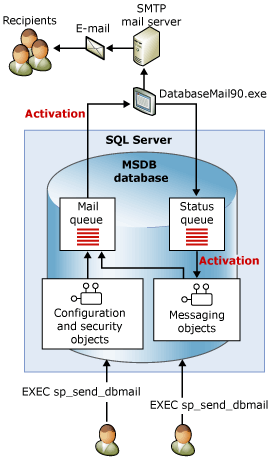
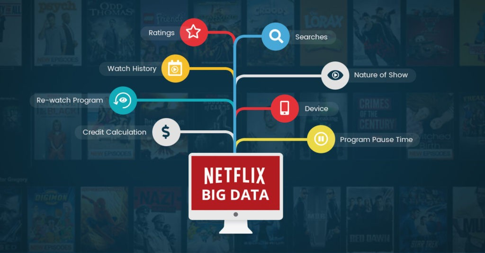
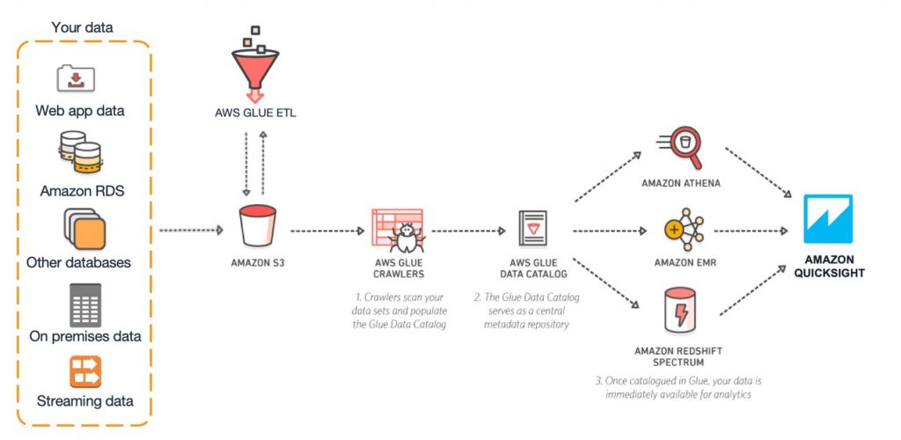

¿Sabrías indicar cinco ejemplos de bases de datos que uses en tu día a día?
Según lo que hemos aprendido una base de datos, en términos genéricos, es un conjunto de datos almacenados que permite que la información pueda ser consultada o analizada tras registrase. Es bajo esta definición que podemos advertir que en nuestro día a día estamos en constante contacto con las mismas, pues quién no consulta su correo electrónico, ve una película en alguna plataforma de streaming o consulta sus redes sociales constantemente. Quién no hace un pedido online de forma puntual, o a veces más de una vez al día, quién no mira Google para alguna consulta diaria. Pues estos son todos ejemplos de bases de datos o de plataformas que la utilizan como eje principal. Ya que en todas ellas para realizar una consulta hay que registarse, entiendase como registarse no solo a consultar con una cuenta personal.

CORREO
El correo Electrónico puede entenderse como una forma de base de datos porque no solo sirve para enviar y recibir mensajes, sino también para almacenar, organizar, recuperar y relacionar información, que son funciones esenciales en cualquier sistema de bases de datos. Cada correo actúa como un registro que contiene datos estructurados, como remitente, destinatario, fecha, entre otros. Estos son elementos comparables a los campos de una tabla dentro de una base de datos tradicioanl. Desde esta perspectiva, la bandeja de entrada funciona como un repositorio de información donde los mensajes quedan almacenados de manera persistente y pueden consultarse en cualquier momento

NETFLIX
Netflix, como cualquier otra plataforma de streaming, puede entenderse como una representación de base de datos porque su funcionamiento depende del almacenamiento, organización y recuperación de información. Esto ocurre, por ejemplo, cuando nos ofrece una sección de películas o series basándose en nuestros gustos. Además, tenemos la posibilidad de buscar y filtrar información. Esto nos muestra cómo la plataforma utiliza los datos almacenados para gestionar información de manera dinámica.
TIK TOK
Al igual que como lo hace Netflix, el funcionamiento de tik tok se basa en almacenar, organizar y procesar grandes cantidades de información. Pero en este caso, esta información está relacionada con tendencias, algoritmos. Cada publicación actúa como un registro con datos como autor, duración, hashtag, visualizaciones y comentarios. Esta estructura permite clasificar contenidos, recuperar información de forma inmediata y personalizar lo que aparece en el feed, mostrando cómo la plataforma opera mediante principios propios de una base de datos dinámica e interconectada, esto último debido a la conexión usuario-creador que existe en tik tok.

AMAZON
Amazon puede entenderse como una representación de base de datos porque su funcionamiento depende del almacenamiento y gestión masiva de información sobre productos, vendedores, inventarios, pedidos, pagos y usuarios. Cada producto funciona como un registro con atributos como precio, categoría, disponibilidad y valoraciones, mientras que las interacciones de los clientes generan datos relacionados que permiten búsquedas, recomendaciones y procesos automatizados. Toda la plataforma opera mediante estructuras organizadas e interconectadas de datos, reflejando claramente principios propios de una base de datos
Google puede verse como una representación de base de datos porque organiza, indexa y recupera enormes volúmenes de información provenientes de millones de páginas web y de los propios usuarios. Su motor de búsqueda funciona como un sistema que consulta y relaciona datos para ofrecer resultados relevantes, mientras servicios como correo, mapas, documentos o almacenamiento gestionan registros conectados entre sí. De esta forma, Google representa una manifestación compleja y dinámica de cómo operan las bases de datos en entornos digitales